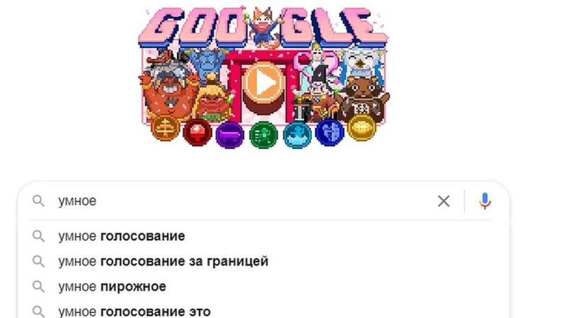

Московский арбитражный суд запретил Google и "Яндекс" показывать в поисковой выдаче результаты по запросу "Умное голосование". Истцом выступила малоизвестная компания с юга России, которая зарегистрировала на себя товарный знак с этой фразой. Би-би-си нашла у компании косвенные связи с силовиками.
Запрет двум крупнейшим поисковикам выдавать результаты поиска по словосочетанию "Умное голосование" был вынесен в пятницу, 3 сентября. Это обеспечительные меры по иску малоизвестной компании "Вулинтертрейд".
Летом она в ускоренном режиме зарегистрировала права на товарный знак со словосочетанием "Умное голосование", хотя обычно на такую процедуру у Роспатента может уходить до года. После этого "Вулинтертрейд" потребовала от техногигантов - Google и "Яндекс" - прекратить в поиске выдавать сайты с упоминанием "Умного голосования". Поисковики отказались, и последовали иски в арбитражный суд.
Иски поступили 1 сентября, а уже 3-го по ним было принято оперативное решение об обеспечительных мерах.
Что известно о "Вулинтертрейд" и как она может быть связана с выходцами из полиции?
"Вулинтертрейд" сейчас зарегистрирована в городе Невиннномысске Ставропольского края, но изначально была записана в Махачкале и называлась "Регул".
Ее первый учредитель - Ашур Ашуров. В 1990-е годы он работал в управлении налоговой полиции Дагестана. После ликвидации налоговой полиции перешел в МВД: с 2003-го по 2011-й он возглавлял отдел документальных проверок и ревизий по линии налоговых преступлений при МВД по Дагестану. А потом занимался аналогичной работой в республиканском управлении экономической безопасности и противодействия коррупции.
Вышел в отставку в звании подполковника в 2017 году. После этого он и создал компанию по торговле шерстью "Регул".
В приложении GetContact, которое показывает, как номер телефона записан у других пользователей, его имя чаще всего встречается вместе с аббревиатурой "УБЭП" - так в народе принято называть управление в системе МВД, где трудился Ашуров. Еще одна запись - "Алик Шерсть Торг".
На звонки корреспондента Би-би-си Ашуров не ответил.
В 2019 году "Регул" отошел семье дагестанского предпринимателя Абдулы Умарова. Тогда же "Регул" переименовали в "Вулинтертрейд", который и прославился на весь мир исками к Google и "Яндекс".
58-летний Умаров давно занимается торговлей шерстью - на него в разное время были записаны несколько компаний со словами "шерсть", "вул" или "трейд" (от английского wool и trade - "шерсть" и "торговля") в названии. Звонок корреспондента Би-би-си он воспринял нервно.
"А вы считаете, что это политический акт? - спросил он сходу. - Юридически "Умное голосование" - это торговый знак. Это была прихоть [зарегистрировать торговую марку], вот так я решил сделать. Неужели я не имею на это право? Я что, закон нарушаю?"
На вопрос, помогали ли ему власти в этом процессе, он ответил встречным вопросом: "Вы от меня хотите услышать, что помогли, наверное, да? Не задавайте мне наводящие вопросы, чтобы я давал вам ответ, который вам нужен. Я вам такой ответ не дам: я сделал то, что захотел".
Его бывший партнер по одной из компаний Ахмед Ахмедов искренне удивился, что Умаров зарегистрировал на себя "Умное голосование": "Мне даже интересно, зачем он это сделал. Это человек приземленный, который ходит по земле, это человек, который [с людьми] дальше главы администрации не разговаривает. А тут, вы говорите, Навальный!"
На вопрос о том, мог ли основатель "Вулинтертрейда" и подполковник МВД в отставке Ашуров попросить торговца шерстью сделать это, он выразил сомнение.
Впрочем, Ашуров - не единственный силовик, с которым может быть связан Умаров.
Умаров и Ахмедов раньше в равных долях владели скотоубойным пунктом в селе Иргаклы Ставропольского края. Бизнес не пошел из-за пандемии, и бойня "заросла травой", рассказал Ахмедов.
В системе "СПАРК-Интерфакс" в контактных данных скотоубойного пункта (ООО "Диниор") указаны два мобильных телефона. "СПАРК" обычно подгружает телефоны из различных регистрационных документов и официальных источников, где упоминается конкретная компания.
Один номер принадлежит торговцу шерсти Умарову, а другой - сотруднику МВД Марату Маздогову.
В 2016 году Маздогов упоминался в открытых источниках как "представитель Главного управления МВД России по Северо-Кавказскому округу, старший оперуполномоченный первой оперативно-розыскной части". Тогда он приехал в один из колледжей Ставрополя на круглый стол об экстремизме и терроризме.
"На примере ряда стран рассказали о фактах, связанных с проявлениями экстремистской и террористической деятельности, разъяснили, как такие акции негативно влияют на общественно-политическую ситуацию не только в регионе, где они происходят, но и в целом в стране", - говорится в отчете о круглом столе на сайте колледжа.
У Маздогова - героическая биография. Свою службу в полиции он начал в 2011 году в районном подразделении по борьбе с экстремизмом в родной Кабардино-Балкарии. Вот что о нем писала ведомственная газета "Щит и меч":
"Спустя несколько месяцев [после начала службы] в селе Исламей был убит местный участковый уполномоченный. Расследовать преступление поручили молодому сыщику Маздогову. Он довольно быстро установил несколько адресов, где, по оперативной информации, могли укрываться подозреваемые. Вскоре при поддержке нескольких бойцов ОМОНа Марат прибыл на проверку одного из этих домов.
Постучав в ворота, офицер вошел во двор. Заметив его, хозяин дома закричал: "Кафиры!" В следующее мгновение из строения по оперативнику ударили несколько автоматных очередей. Офицер получил пулю в ногу, но продолжал отстреливаться. Бойцы ОМОНа прикрыли огнём раненого товарища и вынесли его в безопасное место".
В 2014 году на Маздогова было совершенно покушение. "Преступники действовали по давно отработанной схеме. Выследив ночью машину, в которой ехал Марат, они открыли по ней шквальный огонь. Однако сыщик успел выскочить из салона и ответил прицельными выстрелами из пистолета", - говорится все в той же статье в газете "Щит и меч".
За свои смелые действия Маздогов был награжден орденом Мужества.
В разговоре с корреспондентом Би-би-си он подтвердил, что по-прежнему работает в МВД. Однако о компании "Диниор", в регистрационных данных которой указан его телефон, якобы слышит впервые.
"Если честно, задолбали уже звонить. Кто-то на "Авито" или где-то мой телефон указал как "Диниор". Часто звонят, какие-то шкуры-муры, за это спрашивают. Даже банки звонят", - ответил он.
"А вы пытались как-то с ними связаться, чтобы вам перестали звонить?" - спросил корреспондент Би-би-си.
"Как-то какой-то номер находил я. Я туда набрал, переговорил с ними, [а они ответили] отстаньте от меня, если ваш номер на "Авито" или где-то стоит, разговаривайте [с теми, где ваш номер указан]. Так и забросил".
В архивах "Авито" и других подобных сайтов сохранились объявления с номером Маздогова, но не о продаже шерсти: через эти сервисы полицейский продавал дом и автомобили.
На вопросы про "Умное голосование" он ответил, что торговца шерстью Умарова он не знает и регистрировать на себя торговый знак он его не просил.
Умаров и его бывший партнер Ахмедов заявили, что не знают Маздогова и понятия не имеют, как номер полицейского оказался в карточке их компании в "СПАРКе".
Проект "Умное голосование" был запущен оппозиционным политиком Алексеем Навальным, чтобы максимально сократить число голосов, поданных за "Единую Россию" на выборах.
Роскомнадзор последовательно ведет борьбу с "Умным голосованием", так как проект связан с ФБК (запрещен в России, а также признан иноагентом и экстремистской организацией). Ведомство блокирует сайт "Умного голосования" и потребовало, чтобы Apple и Google удалили приложение этого сайта из своих магазинов мобильных приложений.
Несмотря на решение арбитражного суда относительно запрета на выдачу результатов по запросу "Умное голосование", и "Яндекс", и Google по-прежнему выдают ссылки на страницы проекта.
В Google не ответили на запрос Би-би-си.
"Мы не согласны с определением суда и будем оспаривать принятые обеспечительные меры. Из документа совершенно непонятно, что конкретно нас обязывают сделать и как это можно реализовать", - объяснили свою позицию в "Яндексе".
Формально обеспечительные меры, наложенные судом в виде запрета определенных действий, должны исполняться немедленно после официального уведомления компаний об этом решении, сказала Би-би-си глава аналитической службы юридической фирмы "Инфралекс" Ольга Плешанова.
А к исполнению решения должны быть привлечены судебные приставы, отметила эксперт.
Но как его исполнять - из резолютивной части решения действительно непонятно, считает Плешанова. "В решении говорится о фразе из двух слов, а поиск запрещен по одному ключевому слову. Так что из него четко не следует, что именно запрещено - словосочетание или каждое слово по отдельности, только ли в сочетании друг с другом и в какой последовательности: запрещен ли, например, поиск по ключевым словам "голосование умное" или "глупое голосование?"- говорит юрист.